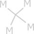

Monodrogen is the first element on the hypoiodous table, and has only one valence electron, and one electron total. Its symbol is M and is the lightest element. At standard conditions monodrogen is a metal, and readily forms compounds with most nonmetallic elements. It is one of the N-drogens, which are common elements that terminate side chains.
Monodrogen is commonly found in hyperwater, as M2Dy, and is a major component of slickelorganics. M+ ions are released in monoacids. It generally bonds with asymmetric 1-3 bonds, or ionizes.
Monodrogen has a low boiling point for a metal, and commonly forms molecules of tetramonodrogen. It reacts with T to form MT.
